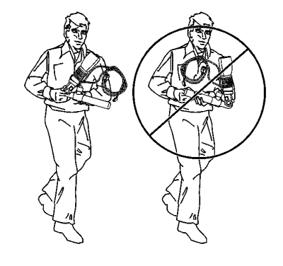
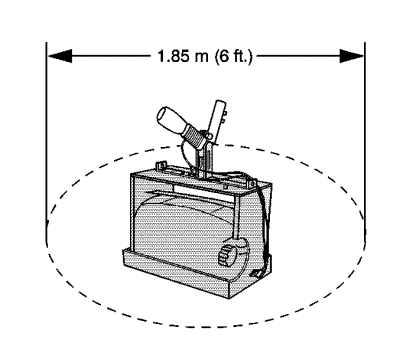
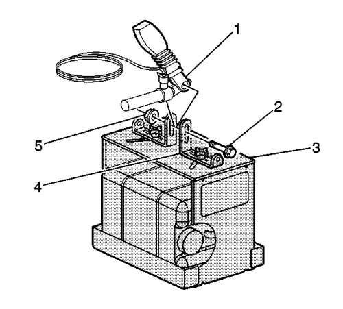
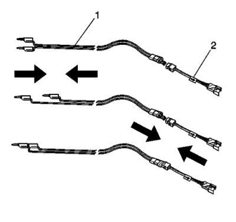
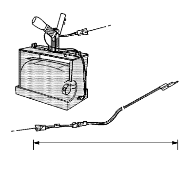
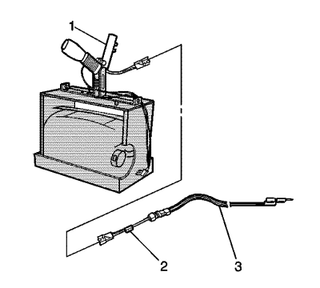
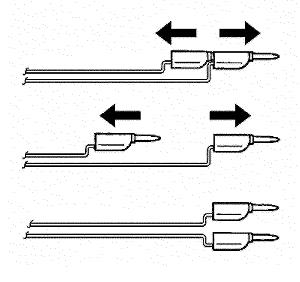
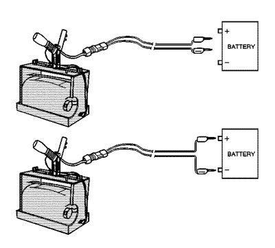
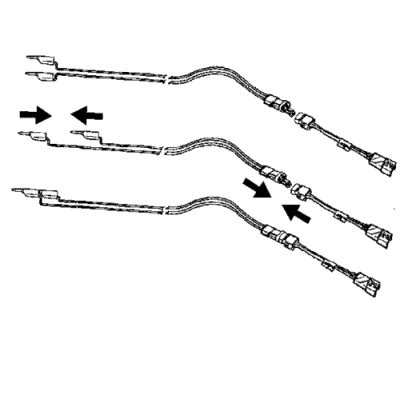

Manipulación y desguace del pretensor
Herramientas especiales
| • | EL-38826 Mazo de cables de activación del SIR |
| • | EL-39401-B Accesorio de activación del SIR |
Si desea informarse sobre herramientas regionales equivalentes, consultar Herramientas especiales .
Advertencia : Cuando transporte un pretensor de cinturón de seguridad no activado:| • | No transporte el pretensor de cinturón de seguridad por sus cables o conector. |
| • | No toque el área del cable del pretensor del cinturón de seguridad. |
| • | No cubra la abertura del tubo con su mano. |
| • | Mantenga el extremo abierto del tubo dirigido siempre lejos de usted. No dirija el extremo abierto del tubo hacia otra persona. |
| • | Cuando el pretensor de activa, el cable se repliega. Esto acorta el pretensor entre la hebilla del cinturón y el perno de montaje. Sujete el pretensor por el tubo del pistón. |
Procedimiento de desguace
Durante la vida útil de un vehículo, pueden presentarse determinadas situaciones que hagan necesario desechar un pretensor (sin activar) con voltaje. La siguiente información detalla los procedimientos adecuados para la eliminación de un pretensor (sin activar) con voltaje. Active el pretensor antes de su eliminación. No deseche un pretensor (sin activar) con voltaje mediante los canales normales de eliminación hasta haberlo activado. La siguiente información detalla los procedimientos adecuados para la eliminación de un pretensor (sin activar) con voltaje.
| • | Tras la sustitución de un pretensor bajo garantía. El pretensor puede necesitar ser devuelto sin activar a su fabricante original. |
| • | Si el vehículo es objeto de un informe de responsabilidad de producto relacionado con el sistema SIR y se somete a una investigación preliminar (GM-1241). No modifique el sistema SIR de ningún modo. |
| • | Si el vehículo forma parte de una campaña que afecta a los pretensores. Siga las instrucciones del boletín de servicio de campaña para observar los procedimientos adecuados de manipulación del SIR. |
Procedimientos de activación
El pretensor puede activarse en el interior o el exterior del vehículo. El método utilizado depende del destino del vehículo. Vea los siguientes procedimientos para determinar cuál funciona mejor en una determinada situación.
Activación en el interior del vehículo
Consulte Manipulación y desguace del módulo del airbag para conocer el método de activación del pretensor en el interior del vehículo bajo el procedimiento de desguace del vehículo
Activación de los pretensores de cinturones de seguridad en el exterior del vehículo
Active los pretensores del cinturón de seguridad fuera del vehículo cuando el vehículo deba volver a ponerse en servicio. Entre las situaciones que requieren que se active fuera del vehículo figuran las siguientes:
| • | Con el diagnóstico del SIR, se determina que el módulo del pretensor del cinturón de seguridad está averiado. |
| • | El cable flexible del pretensor, si corresponde, está dañado. |
| • | El conector del pretensor está dañado. |
| • | El terminal conector del pretensor está dañado. |
La activación y desguace de un pretensor de cinturón de seguridad averiado está sometido al período de retención requerido.
Advertencia : Para evitar la activación accidental del pretensor y el consecuente riesgo de lesiones físicas, no deseche un pretensor desactivado como si fuera un desperdicio normal del taller. El pretensor sin activar contiene sustancias que podrían ocasionar lesiones físicas o enfermedades graves si su recipiente sellado llegara a dañarse durante el proceso de desecho. Utilice los siguientes procedimientos de desecho para deshacerse de cualquier pretensor no activado de forma segura. Si no elimina un pretensor como se indica, podría estar violando las leyes nacionales, autonómicas o locales.
Advertencia : Si está empleando un pretensor para la eliminación, realice los procedimientos de activación en el orden indicado. Si no se realizan los procedimientos en el orden indicado, pueden producirse lesiones personales.

- Gire el interruptor de encendido hasta la posición OFF.
- Desmonte el pretensor del cinturón de seguridad del vehículo.
- Al trasladar un pretensor hasta el área de activación, mantenga el extremo abierto del mismo dirigido lejos de su cuerpo.

- Deje libre un espacio en el suelo de 1,85 m (6 pies) de diámetro para activar el pretensor. Si es posible, hágalo en un lugar pavimentado, exterior y sin actividad. En caso contrario, utilice un espacio que no se use del suelo del taller. Asegúrese de que la ventilación es suficiente.
- Asegúrese de que no hay objetos sueltos o inflamables en la zona.
- Coloque el accesorio EL-39401-B en el centro de la zona despejada.
- Llene el depósito acumulador de plástico del accesorio con agua o arena.

- Monte el módulo (1) en el accesorio de activación del SIR (3) con el extremo abierto hacia arriba según el siguiente método de montaje.
| • | Ajuste y fije los brazos del accesorio EL-39401-B en el accesorio de activación (4) (3). |
| • | Para el montaje, utilice un perno (2) y una tuerca (5) con arandelas del tamaño adecuado para fijar el pretensor (1) a los soportes del accesorio de activación (4). |
| • | Apriete firmemente todos los fijadores antes de la activación. |

- Inspeccione el mazo de cables El-38826 y el adaptador del cable flexible en busca de daños. Sustituya si es necesario.
- Cortocircuite los 2 cables del mazo de activación del SIR (1) uniéndolos con un conector puente colocado entre ellos.
- Conecte el adaptador del cable flexible apropiado (2) al mazo de cables de activación del SIR (1).

- Extienda el mazo de cables y el adaptador del SIR todo lo que se pueda desde el accesorio de activación.

- Conecte el pretensor (1) al adaptador (2) en el mazo de cables de activación (3).
Nota: La expansión rápida del gas implicado en la activación de un pretensor es muy ruidosa. Avise a todas las personas que estén cerca de que va a activar el pretensor del cinturón de seguridad.
- Asegúrese de que no hay nadie en la zona.

Advertencia : Si está empleando un pretensor para la eliminación, realice los procedimientos de activación en el orden indicado. Si no se realizan los procedimientos en el orden indicado, pueden producirse lesiones personales.
- Separe los 2 conectores puente del mazo de cables de activación del SIR.

Nota: Cuando el pretensor del cinturón de seguridad se activa, el accesorio de activación puede saltar unos 30 cm (1 pie) verticalmente. Se trata de una reacción normal del pretensor del cinturón de seguridad debida a la fuerza de la expansión rápida del gas dentro del pretensor.
- Coloque una fuente de alimentación mínima de 12 V/2 A (es decir, la batería de un vehículo) cerca del extremo cortocircuitado del mazo de cables.
- Conecte los cables del mazo de activación del SIR a la fuente de alimentación. El pretensor se activará en cuanto haya contacto.
- Desconecte el mazo de cables de activación del SIR de la fuente de alimentación cuando el pretensor se haya activado.

- Coloque un conector puente en el otro extremo para cortocircuitar los cables del mazo de activación.
- Si el pretensor no se ha activado, desconecte el adaptador e interrumpa el procedimiento. Póngase en contacto con el Grupo de Asistencia Técnica. En caso contrario, continúe con los pasos siguientes.
- Póngase un par de guantes de taller.
- Desconecte el adaptador del cable flexible del pretensor en cuanto sea posible.
- Inspeccione el adaptador del cable flexible y el mazo de cables de activación del SIR. Sustituya si es necesario.
- Deseche el pretensor activado por los canales de desguace normales.
- Lávese las manos con un jabón suave.
| © Copyright Chevrolet Europe. All rights reserved |